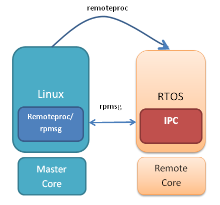
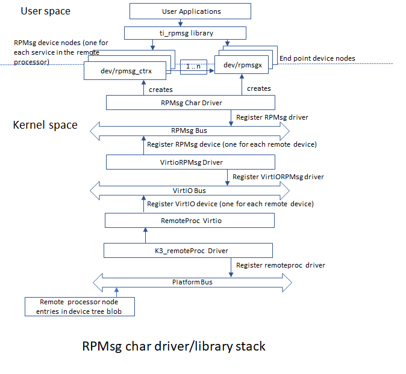

3.5. IPC for J784S4¶
The J784S4 processors have Cortex-R5F and C7x DSP subsystems in addition to a dual core Cortex-A72 subsystem. Please refer to the J784S4 Technical Reference Manual for details.
This article is geared toward J784S4 users that are running Linux on the Cortex A72 cores. The goal is to help users understand how to establish IPC communication with the C7x DSP and R5F cores.
There are many facets to this task: building, loading, debugging, memory sharing, etc. This article intends to take incremental steps toward understanding all of those pieces.
3.5.1. Typical Boot Flow on J784S4 for ARM Linux users¶
J784S4 SOC’s have multiple processor cores - Cortex-A72, Cortex-R5F and DSP cores.
The MCU R5F firmware runs device manager software (SciServer). The MCU R5F firmware (DM) is integrated as part of tispl.bin binary and is started early in the boot process, right after DDR initialization, by u-boot SPL running on MCU R5.
The A72 typically runs a HLOS like Linux/Android. The C7x and R5F remote cores run No-OS or RTOS (FreeRTOS etc). In normal operation, the boot loader (U-Boot/SPL) boots and loads the A72 with the HLOS. The A72 then boots the C7x and R5F cores.
3.5.2. Getting Started with IPC Linux Examples¶
The figure below illustrates how the Remoteproc/RPMsg driver from the ARM Linux kernel communicates with the IPC driver on a remote processors (e.g. R5F) running RTOS.
In order to setup IPC on remote cores, we provide some pre-built examples in the SDK package that can be run from ARM Linux.
The remoteproc driver is hard-coded to look for specific files when loading the R5F and C7x cores. Here are the files it looks for on an J784S4 device:
+------------------+-----------------+----------------------+-----------------------+
| Core Name | RemoteProc Name | Description | Firmware File Name |
+==================+=================+======================+=======================+
| C7x | 64800000.c7x | C7x core | j784s4-c71_0-fw |
+------------------+-----------------+----------------------+-----------------------+
| C7x | 65800000.c7x | C7x core | j784s4-c71_1-fw |
+------------------+-----------------+----------------------+-----------------------+
| C7x | 66800000.c7x | C7x core | j784s4-c71_2-fw |
+------------------+-----------------+----------------------+-----------------------+
| C7x | 67800000.c7x | C7x core | j784s4-c71_3-fw |
+------------------+-----------------+----------------------+-----------------------+
| R5F | 41000000.r5f | R5F core(MCU domain) | j784s4-mcu-r5f0_0-fw |
+------------------+-----------------+----------------------+-----------------------+
| R5F | 41400000.r5f | R5F core(MCU domain) | j784s4-mcu-r5f0_1-fw |
+------------------+-----------------+----------------------+-----------------------+
| R5F | 5c00000.r5f | R5F core(MAIN domain)| j784s4-main-r5f0_0-fw |
+------------------+-----------------+----------------------+-----------------------+
| R5F | 5d00000.r5f | R5F core(MAIN domain)| j784s4-main-r5f0_1-fw |
+------------------+-----------------+----------------------+-----------------------+
| R5F | 5e00000.r5f | R5F core(MAIN domain)| j784s4-main-r5f1_0-fw |
+------------------+-----------------+----------------------+-----------------------+
| R5F | 5f00000.r5f | R5F core(MAIN domain)| j784s4-main-r5f1_1-fw |
+------------------+-----------------+----------------------+-----------------------+
| R5F | 5900000.r5f | R5F core(MAIN domain)| j784s4-main-r5f2_0-fw |
+------------------+-----------------+----------------------+-----------------------+
| R5F | 5a00000.r5f | R5F core(MAIN domain)| j784s4-main-r5f2_1-fw |
+------------------+-----------------+----------------------+-----------------------+
Generally on a target file system the above files are soft linked to the intended executable FW files:
root@j784s4-evm:~# ls -l /lib/firmware/
lrwxrwxrwx 1 root root 66 Mar 9 2018 j784s4-c71_0-fw -> /lib/firmware/ti-ipc/j784s4/ipc_echo_test_c7x_1_release_strip.xe71
lrwxrwxrwx 1 root root 66 Mar 9 2018 j784s4-c71_1-fw -> /lib/firmware/ti-ipc/j784s4/ipc_echo_test_c7x_2_release_strip.xe71
lrwxrwxrwx 1 root root 66 Mar 9 2018 j784s4-c71_2-fw -> /lib/firmware/ti-ipc/j784s4/ipc_echo_test_c7x_3_release_strip.xe71
lrwxrwxrwx 1 root root 66 Mar 9 2018 j784s4-c71_3-fw -> /lib/firmware/ti-ipc/j784s4/ipc_echo_test_c7x_4_release_strip.xe71
lrwxrwxrwx 1 root root 68 Mar 9 2018 j784s4-main-r5f0_0-fw -> /lib/firmware/ti-ipc/j784s4/ipc_echo_test_mcu2_0_release_strip.xer5f
lrwxrwxrwx 1 root root 68 Mar 9 2018 j784s4-main-r5f0_1-fw -> /lib/firmware/ti-ipc/j784s4/ipc_echo_test_mcu2_1_release_strip.xer5f
lrwxrwxrwx 1 root root 68 Mar 9 2018 j784s4-main-r5f1_0-fw -> /lib/firmware/ti-ipc/j784s4/ipc_echo_test_mcu3_0_release_strip.xer5f
lrwxrwxrwx 1 root root 68 Mar 9 2018 j784s4-main-r5f1_1-fw -> /lib/firmware/ti-ipc/j784s4/ipc_echo_test_mcu3_1_release_strip.xer5f
lrwxrwxrwx 1 root root 68 Mar 9 2018 j784s4-main-r5f2_0-fw -> /lib/firmware/ti-ipc/j784s4/ipc_echo_test_mcu4_0_release_strip.xer5f
lrwxrwxrwx 1 root root 68 Mar 9 2018 j784s4-main-r5f2_1-fw -> /lib/firmware/ti-ipc/j784s4/ipc_echo_test_mcu4_1_release_strip.xer5f
lrwxrwxrwx 1 root root 66 Mar 9 2018 j784s4-mcu-r5f0_0-fw -> /lib/firmware/ti-eth/j784s4/app_remoteswitchcfg_server_strip.xer5f
lrwxrwxrwx 1 root root 73 Mar 9 2018 j784s4-mcu-r5f0_0-fw-sec -> /lib/firmware/ti-eth/j784s4/app_remoteswitchcfg_server_strip.xer5f.signed
lrwxrwxrwx 1 root root 68 Mar 9 2018 j784s4-mcu-r5f0_1-fw -> /lib/firmware/ti-ipc/j784s4/ipc_echo_test_mcu1_1_release_strip.xer5f
For updating MCU (DM) R5F firmware binary, tispl.bin needs to be recompiled with the new firmware binary as mentioned below :
Go to linux installer and replace the existing R5F MCU (DM) firmware binary with the new one
host# cp <path_to_new_fw_binary>/ipc_echo_testb_freertos_mcu1_0_release.xer5f <path_to_linux_installer>/board-support/prebuilt-images/ti-dm/j784s4/ipc_echo_testb_mcu1_0_release_strip.xer5f
Recompile u-boot to regenerate tispl.bin using the top level makefile.
host# make u-boot
Please refer to Top-Level Makefile for more details on Top Level makefile.
Replace the updated tispl.bin containing new R5F firmware binary in the boot partition of sdcard and reboot
host# sudo cp board-support/u-boot_build/A72/tispl.bin /media/$USER/boot
3.5.3. Booting Remote Cores from Linux console/User space¶
To reload a remote core with new executables, please follow the below steps.
First, identify the remotproc node associated with the remote core:
root@j784s4-evm:~# head /sys/class/remoteproc/remoteproc*/name
==> /sys/class/remoteproc/remoteproc0/name <==
64800000.dsp
==> /sys/class/remoteproc/remoteproc1/name <==
65800000.dsp
==> /sys/class/remoteproc/remoteproc10/name <==
5a00000.r5f
==> /sys/class/remoteproc/remoteproc2/name <==
66800000.dsp
==> /sys/class/remoteproc/remoteproc3/name <==
67800000.dsp
==> /sys/class/remoteproc/remoteproc4/name <==
41000000.r5f
==> /sys/class/remoteproc/remoteproc5/name <==
5c00000.r5f
==> /sys/class/remoteproc/remoteproc6/name <==
5d00000.r5f
==> /sys/class/remoteproc/remoteproc7/name <==
5e00000.r5f
==> /sys/class/remoteproc/remoteproc8/name <==
5f00000.r5f
==> /sys/class/remoteproc/remoteproc9/name <==
5900000.r5f
Then, use the sysfs interface to stop the remote core. For example, to stop the C71x
root@j784s4-evm:~# echo stop > /sys/class/remoteproc/remoteproc5/state
[ 748.578297] remoteproc remoteproc5: stopped remote processor 5c00000.r5f
If needed, update the firmware symbolic link to point to a new firmware:
root@j784s4-evm:/lib/firmware# ln -sf /lib/firmware/ti-ipc/j784s4/ipc_echo_test_c7x_1_release_strip.xe71 j784s4-c71_0-fw
Finally, use the sysfs interface to start the remote core:
root@j784s4-evm:~# echo start > /sys/class/remoteproc/remoteproc5/state
[ 798.485687] remoteproc remoteproc5: powering up 5c00000.r5f
[ 798.491423] remoteproc remoteproc5: Booting fw image j784s4-main-r5f0_0-fw, size 84712
[ 798.500410] rproc-virtio rproc-virtio.5.auto: assigned reserved memory node r5f-dma-memory@a2000000
[ 798.509987] virtio_rpmsg_bus virtio5: rpmsg host is online
[ 798.515514] rproc-virtio rproc-virtio.5.auto: registered virtio5 (type 7)
[ 798.522303] remoteproc remoteproc5: remote processor 5c00000.r5f is now up
[ 798.700302] virtio_rpmsg_bus virtio5: creating channel ti.ipc4.ping-pong addr 0xd
[ 798.707954] virtio_rpmsg_bus virtio5: creating channel rpmsg_chrdev addr 0xe
Note
The above process is for the gracful remote core shutdown and start. In some cases, graceful shutdown may not work. In such cases, it is recommended to put new firmwares in /lib/firmware location and do a reboot.
3.5.4. DMA memory Carveouts¶
System memory is carved out for each remote processor core for IPC and for the remote processor’s code/data section needs. The default memory carveouts (DMA pools) are shown below.
See the devicetree bindings documentation for more details: Documentation/devicetree/bindings/remoteproc/ti,k3-r5f-rproc.yaml
+------------------+--------------------+---------+----------------------------+
| Memory Section | Physical Address | Size | Description |
+==================+====================+=========+============================+
| C7x Pool | 0xa8000000 | 1MB | IPC (Virtio/Vring buffers) |
+------------------+--------------------+---------+----------------------------+
| C7x Pool | 0xa8100000 | 15MB | C7x externel code/data mem |
+------------------+--------------------+---------+----------------------------+
| C7x Pool | 0xa9000000 | 1MB | IPC (Virtio/Vring buffers) |
+------------------+--------------------+---------+----------------------------+
| C7x Pool | 0xa9100000 | 15MB | C7x externel code/data mem |
+------------------+--------------------+---------+----------------------------+
| C7x Pool | 0xaa000000 | 1MB | IPC (Virtio/Vring buffers) |
+------------------+--------------------+---------+----------------------------+
| C7x Pool | 0xaa100000 | 15MB | C7x externel code/data mem |
+------------------+--------------------+---------+----------------------------+
| C7x Pool | 0xab000000 | 1MB | IPC (Virtio/Vring buffers) |
+------------------+--------------------+---------+----------------------------+
| C7x Pool | 0xab100000 | 15MB | C7x externel code/data mem |
+------------------+--------------------+---------+----------------------------+
| R5F(mcu) Pool | 0xa0000000 | 1MB | IPC (Virtio/Vring buffers) |
+------------------+--------------------+---------+----------------------------+
| R5F(mcu) Pool | 0xa0100000 | 15MB | R5F externel code/data mem |
+------------------+--------------------+---------+----------------------------+
| R5F(mcu) Pool | 0xa1000000 | 1MB | IPC (Virtio/Vring buffers) |
+------------------+--------------------+---------+----------------------------+
| R5F(mcu) Pool | 0xa1100000 | 15MB | R5F externel code/data mem |
+------------------+--------------------+---------+----------------------------+
| R5F(main) Pool | 0xa2000000 | 1MB | IPC (Virtio/Vring buffers) |
+------------------+--------------------+---------+----------------------------+
| R5F(main) Pool | 0xa2100000 | 15MB | R5F externel code/data mem |
+------------------+--------------------+---------+----------------------------+
| R5F(main) Pool | 0xa3000000 | 1MB | IPC (Virtio/Vring buffers) |
+------------------+--------------------+---------+----------------------------+
| R5F(main) Pool | 0xa3100000 | 15MB | R5F externel code/data mem |
+------------------+--------------------+---------+----------------------------+
| R5F(main) Pool | 0xa4000000 | 1MB | IPC (Virtio/Vring buffers) |
+------------------+--------------------+---------+----------------------------+
| R5F(main) Pool | 0xa4100000 | 15MB | R5F externel code/data mem |
+------------------+--------------------+---------+----------------------------+
| R5F(main) Pool | 0xa5000000 | 1MB | IPC (Virtio/Vring buffers) |
+------------------+--------------------+---------+----------------------------+
| R5F(main) Pool | 0xa5100000 | 15MB | R5F externel code/data mem |
+------------------+--------------------+---------+----------------------------+
| R5F(main) Pool | 0xa6000000 | 1MB | IPC (Virtio/Vring buffers) |
+------------------+--------------------+---------+----------------------------+
| R5F(main) Pool | 0xa6100000 | 15MB | R5F externel code/data mem |
+------------------+--------------------+---------+----------------------------+
| R5F(main) Pool | 0xa7000000 | 1MB | IPC (Virtio/Vring buffers) |
+------------------+--------------------+---------+----------------------------+
| R5F(main) Pool | 0xa7100000 | 15MB | R5F externel code/data mem |
+------------------+--------------------+---------+----------------------------+
root@j784s4-evm:~# dmesg | grep Reserved
[ 0.000000] Reserved memory: created DMA memory pool at 0x00000000a0000000, size 1 MiB
[ 0.000000] Reserved memory: created DMA memory pool at 0x00000000a0100000, size 15 MiB
[ 0.000000] Reserved memory: created DMA memory pool at 0x00000000a1000000, size 1 MiB
[ 0.000000] Reserved memory: created DMA memory pool at 0x00000000a1100000, size 15 MiB
[ 0.000000] Reserved memory: created DMA memory pool at 0x00000000a2000000, size 1 MiB
[ 0.000000] Reserved memory: created DMA memory pool at 0x00000000a2100000, size 15 MiB
[ 0.000000] Reserved memory: created DMA memory pool at 0x00000000a3000000, size 1 MiB
[ 0.000000] Reserved memory: created DMA memory pool at 0x00000000a3100000, size 15 MiB
[ 0.000000] Reserved memory: created DMA memory pool at 0x00000000a4000000, size 1 MiB
[ 0.000000] Reserved memory: created DMA memory pool at 0x00000000a4100000, size 15 MiB
[ 0.000000] Reserved memory: created DMA memory pool at 0x00000000a5000000, size 1 MiB
[ 0.000000] Reserved memory: created DMA memory pool at 0x00000000a5100000, size 15 MiB
[ 0.000000] Reserved memory: created DMA memory pool at 0x00000000a6000000, size 1 MiB
[ 0.000000] Reserved memory: created DMA memory pool at 0x00000000a6100000, size 15 MiB
[ 0.000000] Reserved memory: created DMA memory pool at 0x00000000a7000000, size 1 MiB
[ 0.000000] Reserved memory: created DMA memory pool at 0x00000000a7100000, size 15 MiB
[ 0.000000] Reserved memory: created DMA memory pool at 0x00000000a8000000, size 1 MiB
[ 0.000000] Reserved memory: created DMA memory pool at 0x00000000a8100000, size 15 MiB
[ 0.000000] Reserved memory: created DMA memory pool at 0x00000000a9000000, size 1 MiB
[ 0.000000] Reserved memory: created DMA memory pool at 0x00000000a9100000, size 15 MiB
[ 0.000000] Reserved memory: created DMA memory pool at 0x00000000aa000000, size 1 MiB
[ 0.000000] Reserved memory: created DMA memory pool at 0x00000000aa100000, size 15 MiB
[ 0.000000] Reserved memory: created DMA memory pool at 0x00000000ab000000, size 1 MiB
[ 0.000000] Reserved memory: created DMA memory pool at 0x00000000ab100000, size 15 MiB
[ 0.000000] cma: Reserved 32 MiB at 0x00000000fde00000
Note
The reserved memory sizes listed above are provided as a reference only and subject to change between releases. For latest memory reservations, please refer to the kernel device tree repository : https://git.ti.com/cgit/ti-linux-kernel/ti-linux-kernel/tree/arch/arm64/boot/dts/ti/k3-j784s4-evm.dts?h=ti-linux-6.1.y
By default the first 1MB of each pool is used for the Virtio and Vring buffers used to communicate with the remote processor core. The remaining carveout is used for the remote core external memory (program code, data, etc).
Note
The resource table entity (which describes the system resources needed by the remote processor) needs to be at the beginning of the remote processor external memory section.
Sizes and locations for DMA memory carveouts might be updated, e.g. when custom firmware are used. For details on how to adjust the sizes and locations of the remote core pool carveouts, please see section Changing the Memory Map.
3.5.5. Changing the Memory Map¶
The address and size of the DMA memory carveouts needs to match with the MCU M4F and R5F external memory section sizes in their respective linker mapfiles.
arch/arm64/boot/dts/ti/k3-j784s4-evm.dts
reserved_memory: reserved-memory {
#address-cells = <2>;
#size-cells = <2>;
ranges;
/* global cma region */
linux,cma {
compatible = "shared-dma-pool";
reusable;
size = <0x00 0x70000000>;
linux,cma-default;
};
secure_ddr: optee@9e800000 {
reg = <0x00 0x9e800000 0x00 0x01800000>;
no-map;
};
mcu_r5fss0_core0_dma_memory_region: r5f-dma-memory@a0000000 {
compatible = "shared-dma-pool";
reg = <0x00 0xa0000000 0x00 0x100000>;
no-map;
};
mcu_r5fss0_core0_memory_region: r5f-memory@a0100000 {
compatible = "shared-dma-pool";
reg = <0x00 0xa0100000 0x00 0xf00000>;
no-map;
};
mcu_r5fss0_core1_dma_memory_region: r5f-dma-memory@a1000000 {
compatible = "shared-dma-pool";
reg = <0x00 0xa1000000 0x00 0x100000>;
no-map;
};
mcu_r5fss0_core1_memory_region: r5f-memory@a1100000 {
compatible = "shared-dma-pool";
reg = <0x00 0xa1100000 0x00 0xf00000>;
no-map;
};
main_r5fss0_core0_dma_memory_region: r5f-dma-memory@a2000000 {
compatible = "shared-dma-pool";
reg = <0x00 0xa2000000 0x00 0x100000>;
no-map;
};
main_r5fss0_core0_memory_region: r5f-memory@a2100000 {
compatible = "shared-dma-pool";
reg = <0x00 0xa2100000 0x00 0xf00000>;
no-map;
};
main_r5fss0_core1_dma_memory_region: r5f-dma-memory@a3000000 {
compatible = "shared-dma-pool";
reg = <0x00 0xa3000000 0x00 0x100000>;
no-map;
};
main_r5fss0_core1_memory_region: r5f-memory@a3100000 {
compatible = "shared-dma-pool";
reg = <0x00 0xa3100000 0x00 0xf00000>;
no-map;
};
main_r5fss1_core0_dma_memory_region: r5f-dma-memory@a4000000 {
compatible = "shared-dma-pool";
reg = <0x00 0xa4000000 0x00 0x100000>;
no-map;
};
main_r5fss1_core0_memory_region: r5f-memory@a4100000 {
compatible = "shared-dma-pool";
reg = <0x00 0xa4100000 0x00 0xf00000>;
no-map;
};
main_r5fss1_core1_dma_memory_region: r5f-dma-memory@a5000000 {
compatible = "shared-dma-pool";
reg = <0x00 0xa5000000 0x00 0x100000>;
no-map;
};
main_r5fss1_core1_memory_region: r5f-memory@a5100000 {
compatible = "shared-dma-pool";
reg = <0x00 0xa5100000 0x00 0xf00000>;
no-map;
};
main_r5fss2_core0_dma_memory_region: r5f-dma-memory@a6000000 {
compatible = "shared-dma-pool";
reg = <0x00 0xa6000000 0x00 0x100000>;
no-map;
};
main_r5fss2_core0_memory_region: r5f-memory@a6100000 {
compatible = "shared-dma-pool";
reg = <0x00 0xa6100000 0x00 0xf00000>;
no-map;
};
main_r5fss2_core1_dma_memory_region: r5f-dma-memory@a7000000 {
compatible = "shared-dma-pool";
reg = <0x00 0xa7000000 0x00 0x100000>;
no-map;
};
main_r5fss2_core1_memory_region: r5f-memory@a7100000 {
compatible = "shared-dma-pool";
reg = <0x00 0xa7100000 0x00 0xf00000>;
no-map;
};
c71_0_dma_memory_region: c71-dma-memory@a8000000 {
compatible = "shared-dma-pool";
reg = <0x00 0xa8000000 0x00 0x100000>;
no-map;
};
c71_0_memory_region: c71-memory@a8100000 {
compatible = "shared-dma-pool";
reg = <0x00 0xa8100000 0x00 0xf00000>;
no-map;
};
c71_1_dma_memory_region: c71-dma-memory@a9000000 {
compatible = "shared-dma-pool";
reg = <0x00 0xa9000000 0x00 0x100000>;
no-map;
};
c71_1_memory_region: c71-memory@a9100000 {
compatible = "shared-dma-pool";
reg = <0x00 0xa9100000 0x00 0xf00000>;
no-map;
};
c71_2_dma_memory_region: c71-dma-memory@aa000000 {
compatible = "shared-dma-pool";
reg = <0x00 0xaa000000 0x00 0x100000>;
no-map;
};
c71_2_memory_region: c71-memory@aa100000 {
compatible = "shared-dma-pool";
reg = <0x00 0xaa100000 0x00 0xf00000>;
no-map;
};
c71_3_dma_memory_region: c71-dma-memory@ab000000 {
compatible = "shared-dma-pool";
reg = <0x00 0xab000000 0x00 0x100000>;
no-map;
};
c71_3_memory_region: c71-memory@ab100000 {
compatible = "shared-dma-pool";
reg = <0x00 0xab100000 0x00 0xf00000>;
no-map;
};
};
Warning
Be careful not to overlap carveouts!
Note
The reserved memory sizes listed above are provided as a reference only and subject to change between releases. For latest memory reservations, please refer to the kernel device tree repository : https://git.ti.com/cgit/ti-linux-kernel/ti-linux-kernel/tree/arch/arm64/boot/dts/ti/k3-j784s4-evm.dts?h=ti-linux-6.1.y
3.5.6. RPMsg Char Driver¶
The below picture depicts the kernel driver components and the user space device model for using RPMsg Char driver for communicating with the remote processor.
The RPMsg char driver exposes RPMsg endpoints to user-space processes. Multiple user-space applications can use one RPMsg device uniquely by requesting different interactions with the remote service. The RPMsg char driver supports the creation of multiple endpoints for each probed RPMsg char device, enabling the use of the same device for different instances.
RPMsg devices
Each created endpoint device shows up as a single character device in /dev.
The RPMsg bus sits on top of the VirtIO bus. Each virtio name service announcement message creates a new RPMsg device, which is supposed to bind to a RPMsg driver. RPMsg devices are created dynamically:
The remote processor announces the existence of a remote RPMsg service by sending a name service announcement message containing the name of the service (i.e. name of the device), source and destination addresses. The message is handled by the RPMsg bus, which dynamically creates and registers an RPMsg device which represents the remote service. As soon as a relevant RPMsg driver is registered, it is immediately probed by the bus and the two sides can start exchanging messages.
The control interface
The RPMsg char driver provides control interface (in the form of a character device under /dev/rpmsg_ctrlX) allowing user-space to export an endpoint interface for each exposed endpoint. The control interface provides a dedicated ioctl to create an endpoint device.
3.5.7. ti-rpmsg-char library¶
The ti-rpmsg-char package is located at the ti-rpmsg-char git repo <https://git.ti.com/cgit/rpmsg/ti-rpmsg-char>.
A thin userspace rpmsg char library is provided. The library abstracts the rpmsg char driver usage from userspace. This library provides an easy means to identify and open rpmsg character devices created by the kernel rpmsg-char driver.
This library support TI K3 family of devices (i.e AM65x, AM64x, AM62x, AM62Ax, J784S4, J721S2, J721E, and J7200 SoCs).
The library provides 4 basic APIs wrapping all the rpmsg char driver calls. Please check documentation in ‘include/ti_rpmsg_char.h’ for details..
- rpmsg_char_init()
This function checks that the needed kernel drivers (remoteproc. rpmsg, virtio) are installed and accessible from the user space. Further it also checks the SoC device supports the requested remote processor.
- rpmsg_char_exit()
This function finalizes and performs all the de-initialization and any cleanup on the library. This is the last function that needs to be invoked after all usage is done as part of the application’s cleanup. This only need to be invoked once in an application, there is no reference counting. The function also needs to be invoked in any application’s signal handlers to perform the necessary cleanup of stale rpmsg endpoint devices.
- rpmsg_char_open()
Function to create and access a rpmsg endpoint device for a given rpmsg device.
- rpmsg_char_close()
Function to close and delete a previously created local endpoint
All remote proc ids are defined in rproc_id.h
The below table lists the device enumerations as defined in the rpmsg_char_library. The validity of the enumerations wrt J784S4 is also specified.
+------------------+--------------------+---------+-----------------------------------+
| Enumeration ID | Device Name | Valid | Description |
+==================+====================+=========+===================================+
| R5F_MAIN0_0 | 5c00000.r5f | Yes | R5F core in Main Domain |
+------------------+--------------------+---------+-----------------------------------+
| R5F_MAIN0_1 | 5d00000.r5f | Yes | R5F core in Main Domain |
+------------------+--------------------+---------+-----------------------------------+
| R5F_MAIN1_0 | 5e00000.r5f | Yes | R5F core in Main Domain |
+------------------+--------------------+---------+-----------------------------------+
| R5F_MAIN1_1 | 5f00000.r5f | Yes | R5F core in Main Domain |
+------------------+--------------------+---------+-----------------------------------+
| R5F_MAIN2_0 | 5900000.r5f | Yes | R5F core in Main Domain |
+------------------+--------------------+---------+-----------------------------------+
| R5F_MAIN2_1 | 5a00000.r5f | Yes | R5F core in Main Domain |
+------------------+--------------------+---------+-----------------------------------+
| R5F_MCU0_0 | 41000000.r5f | Yes | R5F core in MCU Domain |
+------------------+--------------------+---------+-----------------------------------+
| R5F_MCU0_1 | 41400000.r5f | Yes | R5F core in MCU Domain |
+------------------+--------------------+---------+-----------------------------------+
| DSP_c71_0 | 64800000.dsp | Yes | DSP core in Main Domain |
+------------------+--------------------+---------+-----------------------------------+
| DSP_c71_1 | 65800000.dsp | Yes | DSP core in Main Domain |
+------------------+--------------------+---------+-----------------------------------+
| DSP_c71_2 | 66800000.dsp | Yes | DSP core in Main Domain |
+------------------+--------------------+---------+-----------------------------------+
| DSP_c71_3 | 67800000.dsp | Yes | DSP core in Main Domain |
+------------------+--------------------+---------+-----------------------------------+
3.5.8. RPMsg examples:¶
RPMsg user space example
Note
These steps were tested on Ubuntu 18.04. Later versions of Ubuntu may need different steps
Note
rpmsg_char_simple comes prepackaged in prebuilt SDK wic images (e.g. tisdk-default-image-j721s2-evm.wic.xz) that comes with the release and below example can be directly run (Step 6) if using the prebuilt wic images
Access source code in the git repo here. rproc_id is defined at include/rproc_id.h.
Build the Linux Userspace example for Linux RPMsg by following the steps in the top-level README:
Download the git repo
Install GNU autoconf, GNU automake, GNU libtool, and v8 compiler as per the README
Perform the Build Steps as per the README
Linux RPMsg can be tested with prebuilt binaries that are packaged in the SDK wic image filesystem:
Copy the Linux RPMsg Userspace application from <ti-rpmsg-char_repo>/examples/rpmsg_char_simple into the board’s Linux filesystem.
Ensure that the remote core symbolic link points to the desired binary file in /lib/firmware/ti-ipc/j7xx/. Update the symbolic link if needed. Reference section Booting Remote Cores from Linux console/User space for more information.
Run the example on the board:
Usage: rpmsg_char_simple [-r <rproc_id>] [-n <num_msgs>] [-d <rpmsg_dev_name] [-p <remote_endpt]
Defaults: rproc_id: 0 num_msgs: 100 rpmsg_dev_name: NULL remote_endpt: 14
For remote proc ids, please refer to : 'https://git.ti.com/cgit/rpmsg/ti-rpmsg-char/tree/include/rproc_id.h'
# MCU R5F<->A72_0 IPC
root@j784s4-evm:~# rpmsg_char_simple -r0 -n10
Created endpt device rpmsg-char-0-795, fd = 4 port = 1026
Exchanging 10 messages with rpmsg device ti.ipc4.ping-pong on rproc id 0 ...
Sending message #0: hello there 0!
Receiving message #0: hello there 0!
Sending message #1: hello there 1!
Receiving message #1: hello there 1!
Sending message #2: hello there 2!
Receiving message #2: hello there 2!
Sending message #3: hello there 3!
Receiving message #3: hello there 3!
Sending message #4: hello there 4!
Receiving message #4: hello there 4!
Sending message #5: hello there 5!
Receiving message #5: hello there 5!
Sending message #6: hello there 6!
Receiving message #6: hello there 6!
Sending message #7: hello there 7!
Receiving message #7: hello there 7!
Sending message #8: hello there 8!
Receiving message #8: hello there 8!
Sending message #9: hello there 9!
Receiving message #9: hello there 9!
Communicated 10 messages successfully on rpmsg-char-0-795
TEST STATUS: PASSED
# R5F_MAIN0_1<->A72_0 IPC
root@j784s4-evm:~# rpmsg_char_simple -r3 -n10
Created endpt device rpmsg-char-3-801, fd = 4 port = 1026
Exchanging 10 messages with rpmsg device ti.ipc4.ping-pong on rproc id 3 ...
Sending message #0: hello there 0!
Receiving message #0: hello there 0!
Sending message #1: hello there 1!
Receiving message #1: hello there 1!
Sending message #2: hello there 2!
Receiving message #2: hello there 2!
Sending message #3: hello there 3!
Receiving message #3: hello there 3!
Sending message #4: hello there 4!
Receiving message #4: hello there 4!
Sending message #5: hello there 5!
Receiving message #5: hello there 5!
Sending message #6: hello there 6!
Receiving message #6: hello there 6!
Sending message #7: hello there 7!
Receiving message #7: hello there 7!
Sending message #8: hello there 8!
Receiving message #8: hello there 8!
Sending message #9: hello there 9!
Receiving message #9: hello there 9!
Communicated 10 messages successfully on rpmsg-char-3-801
TEST STATUS: PASSED
# DSP_C71_2<->A72_0 IPC
root@j784s4-evm:~# rpmsg_char_simple -r13 -n10
Created endpt device rpmsg-char-13-799, fd = 4 port = 1026
Exchanging 10 messages with rpmsg device ti.ipc4.ping-pong on rproc id 13 ...
Sending message #0: hello there 0!
Receiving message #0: hello there 0!
Sending message #1: hello there 1!
Receiving message #1: hello there 1!
Sending message #2: hello there 2!
Receiving message #2: hello there 2!
Sending message #3: hello there 3!
Receiving message #3: hello there 3!
Sending message #4: hello there 4!
Receiving message #4: hello there 4!
Sending message #5: hello there 5!
Receiving message #5: hello there 5!
Sending message #6: hello there 6!
Receiving message #6: hello there 6!
Sending message #7: hello there 7!
Receiving message #7: hello there 7!
Sending message #8: hello there 8!
Receiving message #8: hello there 8!
Sending message #9: hello there 9!
Receiving message #9: hello there 9!
Communicated 10 messages successfully on rpmsg-char-13-799
TEST STATUS: PASSED
RPMsg kernel space example
The kernel space example is in the Linux Processor SDK under samples/rpmsg/rpmsg_client_sample.c
- Build the kernel module rpmsg_client_sample:
Note
rpmsg_client_sample comes prepackaged in prebuilt SDK wic images (e.g. tisdk-default-image-j721s2-evm.wic.xz) that comes with the release and below example can be directly run (Step 5) if using the prebuilt wic images
Set up the kernel config to build the rpmsg client sample.
Use menuconfig to verify Kernel hacking > Sample kernel code > Build rpmsg client sample is M:
$ make ARCH=arm64 CROSS_COMPILE=aarch64-none-linux-gnu- distclean
$ make ARCH=arm64 CROSS_COMPILE=aarch64-none-linux-gnu- defconfig ti_arm64_prune.config
$ make ARCH=arm64 CROSS_COMPILE=aarch64-none-linux-gnu- menuconfig
Symbol: SAMPLE_RPMSG_CLIENT [=m]
│ Type : tristate
│ Defined at samples/Kconfig:116
│ Prompt: Build rpmsg client sample -- loadable modules only
│ Depends on: SAMPLES [=y] && RPMSG [=y] && m && MODULES [=y]
│ Location:
│ -> Kernel hacking
│ -> Sample kernel code (SAMPLES [=y])
│ (1) -> Build rpmsg client sample -- loadable modules only (SAMPLE_RPMSG_CLIENT [=m])
Make the kernel and modules. Multithreading with –j is optional:
$ make ARCH=arm64 CROSS_COMPILE=aarch64-none-linux-gnu- -j8
Linux RPMsg can be tested with prebuilt binaries that are packaged in the SDK wic image filesystem:
Copy the Linux RPMsg kernel driver from <Linux_SDK>/board-support/linux-x.x.x/samples/rpmsg/rpmsg_client_sample.ko into the board’s Linux filesystem.
Ensure that the remote core symbolic link points to the desired binary file in /lib/firmware/ti-ipc/j7xx/. Update the symbolic link if needed. Reference section Booting Remote Cores from Linux console/User space for more information.
Run the example on the board:
root@j784s4-evm:~# modprobe rpmsg_client_sample count=10
[ 1205.514152] rpmsg_client_sample virtio0.ti.ipc4.ping-pong.-1.13: new channel: 0x401 -> 0xd!
[ 1205.522579] rpmsg_client_sample virtio0.ti.ipc4.ping-pong.-1.13: incoming msg 1 (src: 0xd)
[ 1205.525578] rpmsg_client_sample virtio2.ti.ipc4.ping-pong.-1.13: new channel: 0x401 -> 0xd!
[ 1205.530882] rpmsg_client_sample virtio0.ti.ipc4.ping-pong.-1.13: incoming msg 2 (src: 0xd)
[ 1205.539249] rpmsg_client_sample virtio1.ti.ipc4.ping-pong.-1.13: new channel: 0x401 -> 0xd!
[ 1205.547497] rpmsg_client_sample virtio2.ti.ipc4.ping-pong.-1.13: incoming msg 1 (src: 0xd)
[ 1205.555858] rpmsg_client_sample virtio4.ti.ipc4.ping-pong.-1.13: new channel: 0x401 -> 0xd!
[ 1205.564077] rpmsg_client_sample virtio0.ti.ipc4.ping-pong.-1.13: incoming msg 3 (src: 0xd)
[ 1205.572437] rpmsg_client_sample virtio3.ti.ipc4.ping-pong.-1.13: new channel: 0x401 -> 0xd!
[ 1205.580662] rpmsg_client_sample virtio1.ti.ipc4.ping-pong.-1.13: incoming msg 1 (src: 0xd)
[ 1205.589024] rpmsg_client_sample virtio6.ti.ipc4.ping-pong.-1.13: new channel: 0x401 -> 0xd!
[ 1205.597244] rpmsg_client_sample virtio2.ti.ipc4.ping-pong.-1.13: incoming msg 2 (src: 0xd)
[ 1205.605604] rpmsg_client_sample virtio7.ti.ipc4.ping-pong.-1.13: new channel: 0x401 -> 0xd!
[ 1205.613828] rpmsg_client_sample virtio4.ti.ipc4.ping-pong.-1.13: incoming msg 1 (src: 0xd)
[ 1205.622184] rpmsg_client_sample virtio8.ti.ipc4.ping-pong.-1.13: new channel: 0x401 -> 0xd!
[ 1205.630419] rpmsg_client_sample virtio0.ti.ipc4.ping-pong.-1.13: incoming msg 4 (src: 0xd)
[ 1205.638779] rpmsg_client_sample virtio9.ti.ipc4.ping-pong.-1.13: new channel: 0x401 -> 0xd!
[ 1205.647009] rpmsg_client_sample virtio3.ti.ipc4.ping-pong.-1.13: incoming msg 1 (src: 0xd)
[ 1205.655374] rpmsg_client_sample virtio10.ti.ipc4.ping-pong.-1.13: new channel: 0x401 -> 0xd!
[ 1205.663600] rpmsg_client_sample virtio1.ti.ipc4.ping-pong.-1.13: incoming msg 2 (src: 0xd)
[ 1205.672044] rpmsg_client_sample virtio5.ti.ipc4.ping-pong.-1.13: new channel: 0x401 -> 0xd!
[ 1205.680267] rpmsg_client_sample virtio6.ti.ipc4.ping-pong.-1.13: incoming msg 1 (src: 0xd)
[ 1205.696972] rpmsg_client_sample virtio2.ti.ipc4.ping-pong.-1.13: incoming msg 3 (src: 0xd)
[ 1205.705265] rpmsg_client_sample virtio7.ti.ipc4.ping-pong.-1.13: incoming msg 1 (src: 0xd)
[ 1205.715152] rpmsg_client_sample virtio4.ti.ipc4.ping-pong.-1.13: incoming msg 2 (src: 0xd)
[ 1205.723420] rpmsg_client_sample virtio8.ti.ipc4.ping-pong.-1.13: incoming msg 1 (src: 0xd)
[ 1205.731692] rpmsg_client_sample virtio0.ti.ipc4.ping-pong.-1.13: incoming msg 5 (src: 0xd)
[ 1205.739962] rpmsg_client_sample virtio9.ti.ipc4.ping-pong.-1.13: incoming msg 1 (src: 0xd)
[ 1205.748232] rpmsg_client_sample virtio3.ti.ipc4.ping-pong.-1.13: incoming msg 2 (src: 0xd)
[ 1205.756500] rpmsg_client_sample virtio10.ti.ipc4.ping-pong.-1.13: incoming msg 1 (src: 0xd)
[ 1205.764855] rpmsg_client_sample virtio1.ti.ipc4.ping-pong.-1.13: incoming msg 3 (src: 0xd)
[ 1205.773131] rpmsg_client_sample virtio5.ti.ipc4.ping-pong.-1.13: incoming msg 1 (src: 0xd)
[ 1205.781400] rpmsg_client_sample virtio6.ti.ipc4.ping-pong.-1.13: incoming msg 2 (src: 0xd)
[ 1205.789664] rpmsg_client_sample virtio2.ti.ipc4.ping-pong.-1.13: incoming msg 4 (src: 0xd)
[ 1205.797930] rpmsg_client_sample virtio7.ti.ipc4.ping-pong.-1.13: incoming msg 2 (src: 0xd)
[ 1205.806198] rpmsg_client_sample virtio4.ti.ipc4.ping-pong.-1.13: incoming msg 3 (src: 0xd)
[ 1205.814470] rpmsg_client_sample virtio8.ti.ipc4.ping-pong.-1.13: incoming msg 2 (src: 0xd)
[ 1205.822737] rpmsg_client_sample virtio0.ti.ipc4.ping-pong.-1.13: incoming msg 6 (src: 0xd)
[ 1205.831002] rpmsg_client_sample virtio9.ti.ipc4.ping-pong.-1.13: incoming msg 2 (src: 0xd)
[ 1205.839268] rpmsg_client_sample virtio3.ti.ipc4.ping-pong.-1.13: incoming msg 3 (src: 0xd)
[ 1205.847532] rpmsg_client_sample virtio10.ti.ipc4.ping-pong.-1.13: incoming msg 2 (src: 0xd)
[ 1205.855882] rpmsg_client_sample virtio1.ti.ipc4.ping-pong.-1.13: incoming msg 4 (src: 0xd)
[ 1205.864147] rpmsg_client_sample virtio5.ti.ipc4.ping-pong.-1.13: incoming msg 2 (src: 0xd)
[ 1205.872411] rpmsg_client_sample virtio6.ti.ipc4.ping-pong.-1.13: incoming msg 3 (src: 0xd)
[ 1205.880676] rpmsg_client_sample virtio2.ti.ipc4.ping-pong.-1.13: incoming msg 5 (src: 0xd)
[ 1205.888941] rpmsg_client_sample virtio7.ti.ipc4.ping-pong.-1.13: incoming msg 3 (src: 0xd)
[ 1205.897207] rpmsg_client_sample virtio4.ti.ipc4.ping-pong.-1.13: incoming msg 4 (src: 0xd)
[ 1205.905499] rpmsg_client_sample virtio8.ti.ipc4.ping-pong.-1.13: incoming msg 3 (src: 0xd)
[ 1205.913762] rpmsg_client_sample virtio0.ti.ipc4.ping-pong.-1.13: incoming msg 7 (src: 0xd)
[ 1205.922028] rpmsg_client_sample virtio9.ti.ipc4.ping-pong.-1.13: incoming msg 3 (src: 0xd)
[ 1205.930294] rpmsg_client_sample virtio3.ti.ipc4.ping-pong.-1.13: incoming msg 4 (src: 0xd)
[ 1205.938557] rpmsg_client_sample virtio10.ti.ipc4.ping-pong.-1.13: incoming msg 3 (src: 0xd)
[ 1205.946910] rpmsg_client_sample virtio1.ti.ipc4.ping-pong.-1.13: incoming msg 5 (src: 0xd)
[ 1205.955173] rpmsg_client_sample virtio5.ti.ipc4.ping-pong.-1.13: incoming msg 3 (src: 0xd)
[ 1205.963438] rpmsg_client_sample virtio6.ti.ipc4.ping-pong.-1.13: incoming msg 4 (src: 0xd)
[ 1205.971707] rpmsg_client_sample virtio2.ti.ipc4.ping-pong.-1.13: incoming msg 6 (src: 0xd)
[ 1205.979973] rpmsg_client_sample virtio7.ti.ipc4.ping-pong.-1.13: incoming msg 4 (src: 0xd)
[ 1205.988241] rpmsg_client_sample virtio4.ti.ipc4.ping-pong.-1.13: incoming msg 5 (src: 0xd)
[ 1205.996506] rpmsg_client_sample virtio8.ti.ipc4.ping-pong.-1.13: incoming msg 4 (src: 0xd)
[ 1206.004769] rpmsg_client_sample virtio0.ti.ipc4.ping-pong.-1.13: incoming msg 8 (src: 0xd)
[ 1206.013034] rpmsg_client_sample virtio9.ti.ipc4.ping-pong.-1.13: incoming msg 4 (src: 0xd)
[ 1206.021299] rpmsg_client_sample virtio3.ti.ipc4.ping-pong.-1.13: incoming msg 5 (src: 0xd)
[ 1206.029569] rpmsg_client_sample virtio10.ti.ipc4.ping-pong.-1.13: incoming msg 4 (src: 0xd)
[ 1206.037922] rpmsg_client_sample virtio1.ti.ipc4.ping-pong.-1.13: incoming msg 6 (src: 0xd)
[ 1206.046186] rpmsg_client_sample virtio5.ti.ipc4.ping-pong.-1.13: incoming msg 4 (src: 0xd)
[ 1206.054452] rpmsg_client_sample virtio6.ti.ipc4.ping-pong.-1.13: incoming msg 5 (src: 0xd)
[ 1206.062716] rpmsg_client_sample virtio2.ti.ipc4.ping-pong.-1.13: incoming msg 7 (src: 0xd)
[ 1206.070980] rpmsg_client_sample virtio7.ti.ipc4.ping-pong.-1.13: incoming msg 5 (src: 0xd)
[ 1206.079248] rpmsg_client_sample virtio4.ti.ipc4.ping-pong.-1.13: incoming msg 6 (src: 0xd)
[ 1206.087511] rpmsg_client_sample virtio8.ti.ipc4.ping-pong.-1.13: incoming msg 5 (src: 0xd)
[ 1206.095774] rpmsg_client_sample virtio0.ti.ipc4.ping-pong.-1.13: incoming msg 9 (src: 0xd)
[ 1206.104039] rpmsg_client_sample virtio9.ti.ipc4.ping-pong.-1.13: incoming msg 5 (src: 0xd)
[ 1206.112303] rpmsg_client_sample virtio3.ti.ipc4.ping-pong.-1.13: incoming msg 6 (src: 0xd)
[ 1206.120567] rpmsg_client_sample virtio10.ti.ipc4.ping-pong.-1.13: incoming msg 5 (src: 0xd)
[ 1206.128918] rpmsg_client_sample virtio1.ti.ipc4.ping-pong.-1.13: incoming msg 7 (src: 0xd)
[ 1206.137182] rpmsg_client_sample virtio5.ti.ipc4.ping-pong.-1.13: incoming msg 5 (src: 0xd)
[ 1206.145450] rpmsg_client_sample virtio6.ti.ipc4.ping-pong.-1.13: incoming msg 6 (src: 0xd)
[ 1206.153715] rpmsg_client_sample virtio2.ti.ipc4.ping-pong.-1.13: incoming msg 8 (src: 0xd)
[ 1206.161982] rpmsg_client_sample virtio7.ti.ipc4.ping-pong.-1.13: incoming msg 6 (src: 0xd)
[ 1206.170246] rpmsg_client_sample virtio4.ti.ipc4.ping-pong.-1.13: incoming msg 7 (src: 0xd)
[ 1206.178511] rpmsg_client_sample virtio8.ti.ipc4.ping-pong.-1.13: incoming msg 6 (src: 0xd)
[ 1206.186775] rpmsg_client_sample virtio0.ti.ipc4.ping-pong.-1.13: incoming msg 10 (src: 0xd)
[ 1206.195117] rpmsg_client_sample virtio0.ti.ipc4.ping-pong.-1.13: goodbye!
[ 1206.201898] rpmsg_client_sample virtio9.ti.ipc4.ping-pong.-1.13: incoming msg 6 (src: 0xd)
[ 1206.210158] rpmsg_client_sample virtio3.ti.ipc4.ping-pong.-1.13: incoming msg 7 (src: 0xd)
[ 1206.218421] rpmsg_client_sample virtio10.ti.ipc4.ping-pong.-1.13: incoming msg 6 (src: 0xd)
[ 1206.226771] rpmsg_client_sample virtio1.ti.ipc4.ping-pong.-1.13: incoming msg 8 (src: 0xd)
[ 1206.235035] rpmsg_client_sample virtio5.ti.ipc4.ping-pong.-1.13: incoming msg 6 (src: 0xd)
[ 1206.243299] rpmsg_client_sample virtio6.ti.ipc4.ping-pong.-1.13: incoming msg 7 (src: 0xd)
[ 1206.251563] rpmsg_client_sample virtio2.ti.ipc4.ping-pong.-1.13: incoming msg 9 (src: 0xd)
[ 1206.259831] rpmsg_client_sample virtio7.ti.ipc4.ping-pong.-1.13: incoming msg 7 (src: 0xd)
[ 1206.268097] rpmsg_client_sample virtio4.ti.ipc4.ping-pong.-1.13: incoming msg 8 (src: 0xd)
[ 1206.276361] rpmsg_client_sample virtio8.ti.ipc4.ping-pong.-1.13: incoming msg 7 (src: 0xd)
[ 1206.284628] rpmsg_client_sample virtio9.ti.ipc4.ping-pong.-1.13: incoming msg 7 (src: 0xd)
[ 1206.292893] rpmsg_client_sample virtio3.ti.ipc4.ping-pong.-1.13: incoming msg 8 (src: 0xd)
[ 1206.301157] rpmsg_client_sample virtio10.ti.ipc4.ping-pong.-1.13: incoming msg 7 (src: 0xd)
[ 1206.309509] rpmsg_client_sample virtio1.ti.ipc4.ping-pong.-1.13: incoming msg 9 (src: 0xd)
[ 1206.317772] rpmsg_client_sample virtio5.ti.ipc4.ping-pong.-1.13: incoming msg 7 (src: 0xd)
[ 1206.326036] rpmsg_client_sample virtio6.ti.ipc4.ping-pong.-1.13: incoming msg 8 (src: 0xd)
[ 1206.334300] rpmsg_client_sample virtio2.ti.ipc4.ping-pong.-1.13: incoming msg 10 (src: 0xd)
[ 1206.342644] rpmsg_client_sample virtio2.ti.ipc4.ping-pong.-1.13: goodbye!
[ 1206.349426] rpmsg_client_sample virtio7.ti.ipc4.ping-pong.-1.13: incoming msg 8 (src: 0xd)
[ 1206.357688] rpmsg_client_sample virtio4.ti.ipc4.ping-pong.-1.13: incoming msg 9 (src: 0xd)
[ 1206.365952] rpmsg_client_sample virtio8.ti.ipc4.ping-pong.-1.13: incoming msg 8 (src: 0xd)
[ 1206.374223] rpmsg_client_sample virtio9.ti.ipc4.ping-pong.-1.13: incoming msg 8 (src: 0xd)
[ 1206.382488] rpmsg_client_sample virtio3.ti.ipc4.ping-pong.-1.13: incoming msg 9 (src: 0xd)
[ 1206.390753] rpmsg_client_sample virtio10.ti.ipc4.ping-pong.-1.13: incoming msg 8 (src: 0xd)
[ 1206.399104] rpmsg_client_sample virtio1.ti.ipc4.ping-pong.-1.13: incoming msg 10 (src: 0xd)
[ 1206.407448] rpmsg_client_sample virtio1.ti.ipc4.ping-pong.-1.13: goodbye!
[ 1206.414229] rpmsg_client_sample virtio5.ti.ipc4.ping-pong.-1.13: incoming msg 8 (src: 0xd)
[ 1206.422490] rpmsg_client_sample virtio6.ti.ipc4.ping-pong.-1.13: incoming msg 9 (src: 0xd)
[ 1206.430754] rpmsg_client_sample virtio7.ti.ipc4.ping-pong.-1.13: incoming msg 9 (src: 0xd)
[ 1206.439019] rpmsg_client_sample virtio4.ti.ipc4.ping-pong.-1.13: incoming msg 10 (src: 0xd)
[ 1206.447363] rpmsg_client_sample virtio4.ti.ipc4.ping-pong.-1.13: goodbye!
[ 1206.454144] rpmsg_client_sample virtio8.ti.ipc4.ping-pong.-1.13: incoming msg 9 (src: 0xd)
[ 1206.462405] rpmsg_client_sample virtio9.ti.ipc4.ping-pong.-1.13: incoming msg 9 (src: 0xd)
[ 1206.470670] rpmsg_client_sample virtio3.ti.ipc4.ping-pong.-1.13: incoming msg 10 (src: 0xd)
[ 1206.479016] rpmsg_client_sample virtio3.ti.ipc4.ping-pong.-1.13: goodbye!
[ 1206.485800] rpmsg_client_sample virtio10.ti.ipc4.ping-pong.-1.13: incoming msg 9 (src: 0xd)
[ 1206.494148] rpmsg_client_sample virtio5.ti.ipc4.ping-pong.-1.13: incoming msg 9 (src: 0xd)
[ 1206.502414] rpmsg_client_sample virtio6.ti.ipc4.ping-pong.-1.13: incoming msg 10 (src: 0xd)
[ 1206.510758] rpmsg_client_sample virtio6.ti.ipc4.ping-pong.-1.13: goodbye!
[ 1206.517539] rpmsg_client_sample virtio7.ti.ipc4.ping-pong.-1.13: incoming msg 10 (src: 0xd)
[ 1206.525879] rpmsg_client_sample virtio7.ti.ipc4.ping-pong.-1.13: goodbye!
[ 1206.532659] rpmsg_client_sample virtio8.ti.ipc4.ping-pong.-1.13: incoming msg 10 (src: 0xd)
[ 1206.541002] rpmsg_client_sample virtio8.ti.ipc4.ping-pong.-1.13: goodbye!
[ 1206.547784] rpmsg_client_sample virtio9.ti.ipc4.ping-pong.-1.13: incoming msg 10 (src: 0xd)
[ 1206.556125] rpmsg_client_sample virtio9.ti.ipc4.ping-pong.-1.13: goodbye!
[ 1206.562907] rpmsg_client_sample virtio10.ti.ipc4.ping-pong.-1.13: incoming msg 10 (src: 0xd)
[ 1206.571333] rpmsg_client_sample virtio10.ti.ipc4.ping-pong.-1.13: goodbye!
[ 1206.578202] rpmsg_client_sample virtio5.ti.ipc4.ping-pong.-1.13: incoming msg 10 (src: 0xd)
[ 1206.586542] rpmsg_client_sample virtio5.ti.ipc4.ping-pong.-1.13: goodbye!